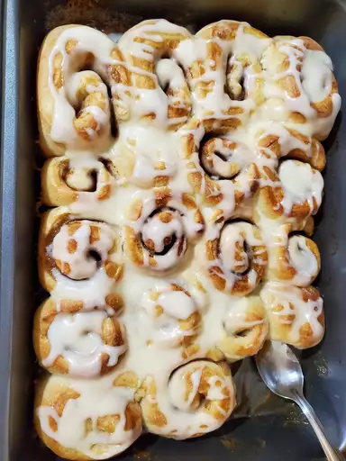

Cinnamon Roll Recipe

Ingredients
- 1 pound loaf frozen bread dough, thawed
- 3 tablespoons butter, melted
- 2/3 cup brown sugar
- 1/2 cup chopped walnuts
- 1 teaspoon ground cinnamon
- 1 teaspoon water, or as needed
- 1/3 cup heavy whipping cream
- 2/3 cup sifted confectioners' sugar
- 2 tablespoons milk
- 1 dash vanilla extract
Instructions
- Lightly grease 2 round cake pans with butter
- Roll bread dough out to rectangle. Brush with melted butter. Combine said ingredients. Cut log into 20 slices and arrange.
- Preheat oven to 350 degrees. Pour heavy cream over dough
- Bake in preheated oven until golden brown, about 25 minutes
- Mix confectioners' sugar, milk, and vanilla extract in a small bowl; drizzle over warm cinnamon rolls to serve